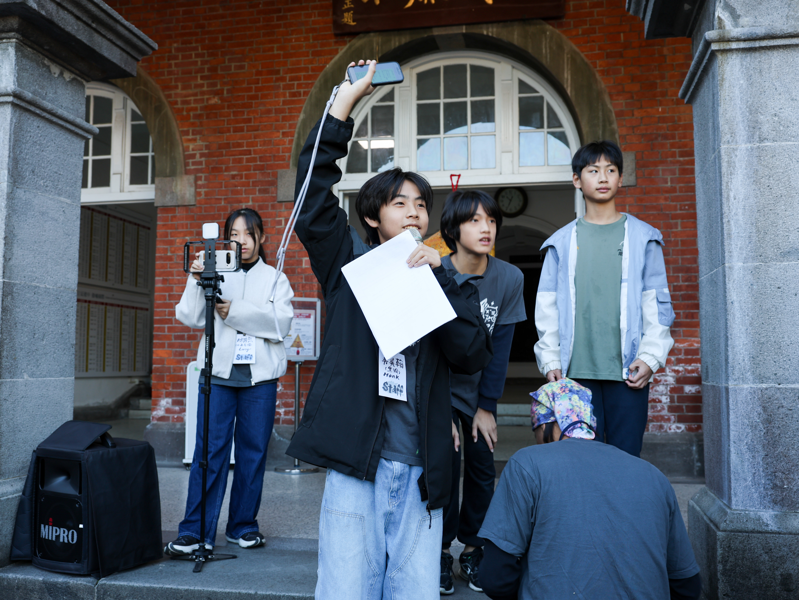

2023 年 8 月，我和 5 個朋友一起蹲下來撿菸蒂，開始了「不落蒂聯盟」。三年後，我們做了一個菸蒂快篩 APP、發明了智慧攔截網，還站上了副總統身邊發布國家海洋政策白皮書。除了環境行動，我也是荒野少年、空手道選手，喜歡看書、看電影。

如果你剛認識我，或者只是在某個活動、新聞裡看到我的名字——這裡有三個分頁，用最快的方式讓你知道「吳昊翰是誰、在做什麼」。
從撿菸蒂到走進立法院、站上副總統身邊——我的環境行動主線，包含 APP、發明、獲獎與媒體報導。
空手道金牌、帆船、重量訓練、荒野少年，還有讀了三次的《哈利波特》。
我的角色、經歷時間軸，還有這一路上支持我的人。